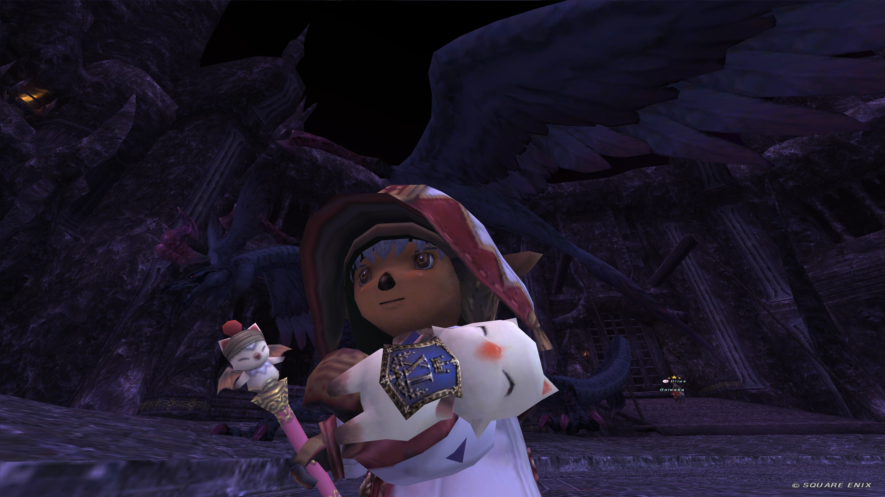
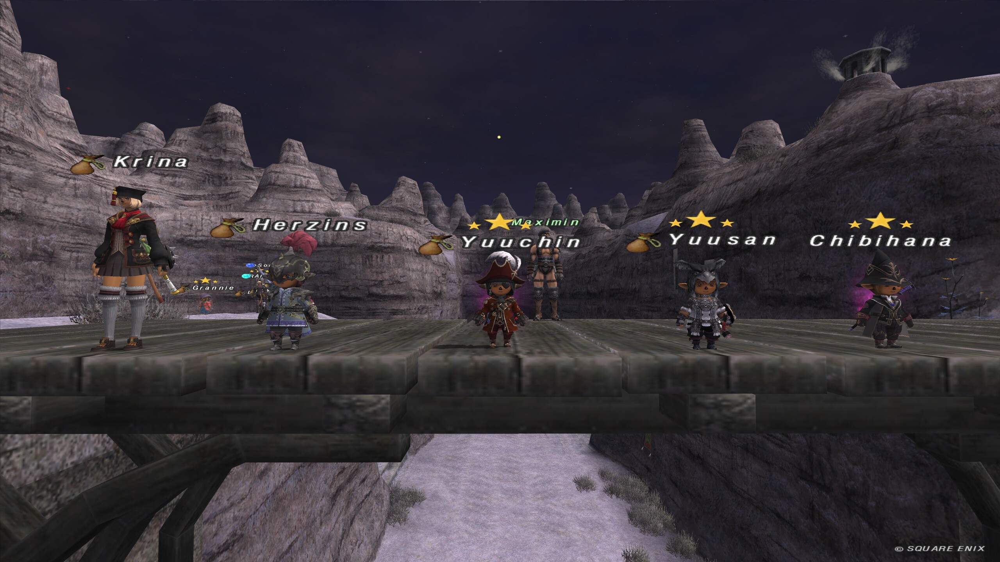
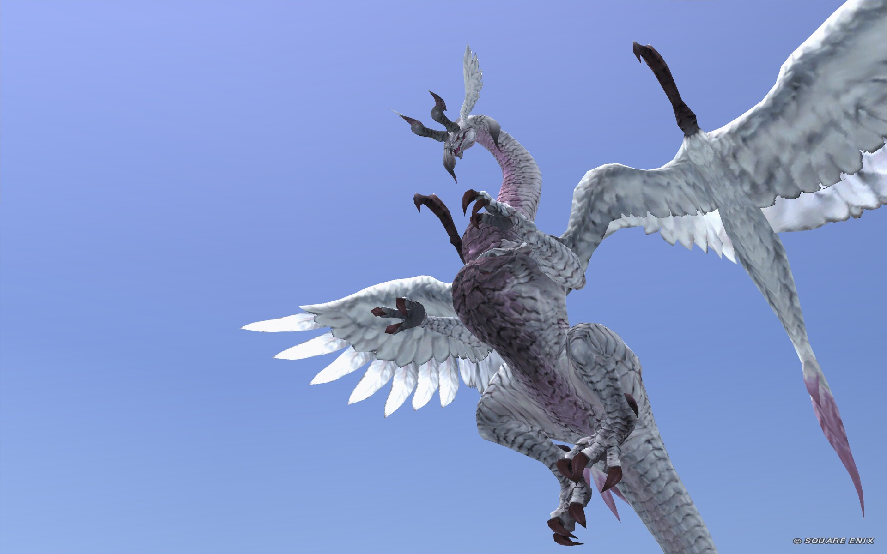
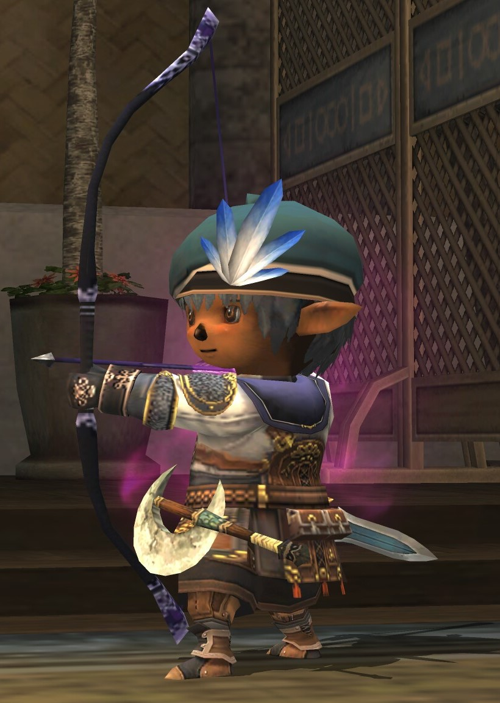
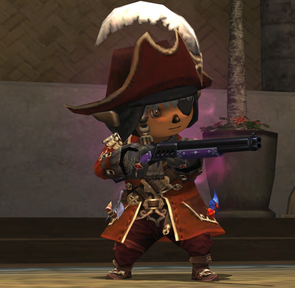
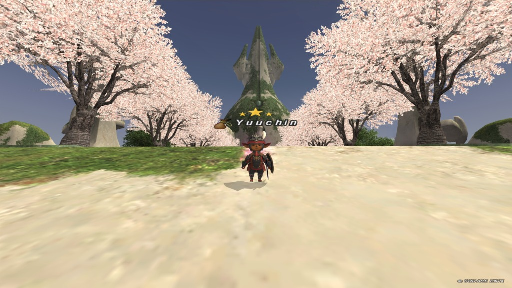
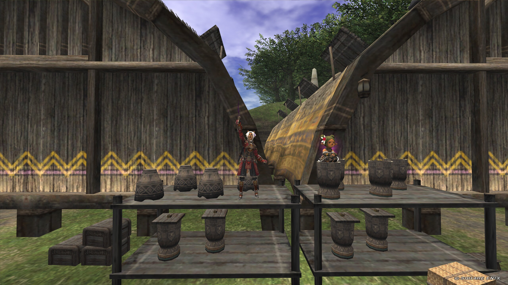
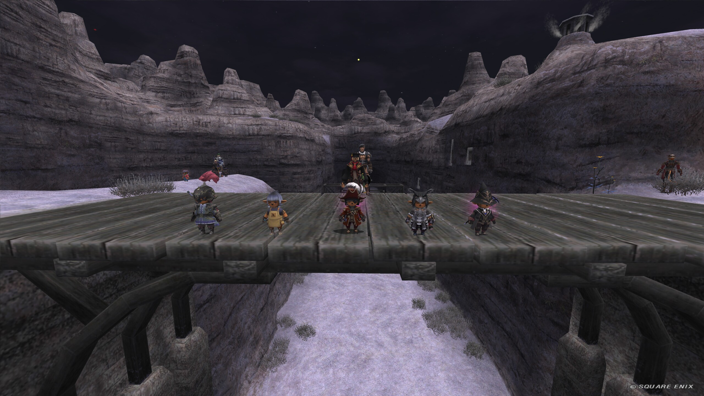
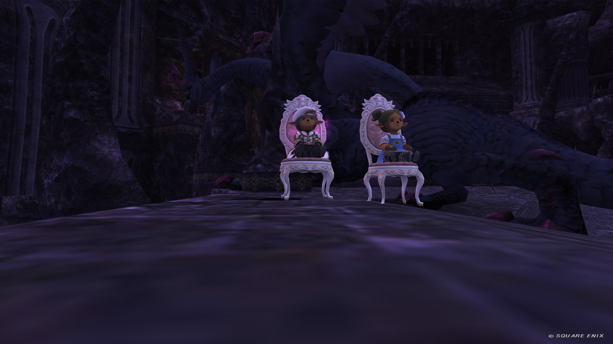

FF11遠隔ジョブに全振りした
タルの日常
狩人・コルセア装備、金策、ソーティ／オデシー攻略を、現役プレイヤーの実戦目線で更新しています。
あなたのプレイスタイルに合わせた攻略ガイド
目的別カテゴリ
What's New (最新の更新)
- 2026.07.14
- 2026.07.14
- 2026.07.13
- 2026.07.13
-
2026.06.11
連携シミュレーターのスマホ対応PWA化およびお気に入り保存UI機能の実装、および各記事ページへのご意見ご要望コメント欄を追加しました。
作者のプレイスタイル
ジェールV25 完全制覇への軌跡
ビスマルクサーバーで活動中のタルタル「Yuuchin」です。他サイトで古いまま放置されがちな「今」の情報を、現役遠隔アタッカーの目線から発信中！
- ジェール Veng+25 オールクリアー
- 狩人・コルセア装備 妥協なし
- 遠隔武器 RMEAP 全種類コンプ
最強を目指す過程に終わりはありません。レリック、ミシック、エンピリアン、イオニック、プライム、すべての究極武器を手に、タルタルは今日も戦場を支配します。



YouTube 配信 ＆ ヴァナ生活
ヴァナ・ディール ライブ配信中
YouTubeにて、ジェールの攻略やオデシー、日々の金策冒険をゆるりとライブ配信しています。タルタル遠隔アタッカーの視点での攻略動画もアーカイブ中！もし装備や攻略でわからない部分があれば、ライブ配信のときにチャットで気軽に直接聞いてくださいね！



ウィンダスから世界へ
故郷ウィンダスの星の大樹の下で矢尻を研ぎ、ある時はソーティへ、ある時はオデシーへ。タルタルならではの小ささを活かした（？）フットワークの軽さ。
LS（リンクシェル）の仲間たちとの連携や、野良募集での一期一会。今日もどこかで、銃声と弦音が響きます。
装備・攻略カテゴリを見る


すべての更新履歴
- 2026.07.14
- 2026.07.14
- 2026.07.13
- 2026.07.13
-
2026.06.11
連携シミュレーターのスマホ対応PWA化およびお気に入り保存UI機能の実装、および各記事ページへのご意見ご要望コメント欄を追加しました。
- 2026.06.08
- 2026.06.07
- 2026.06.01
- 2026.06.01